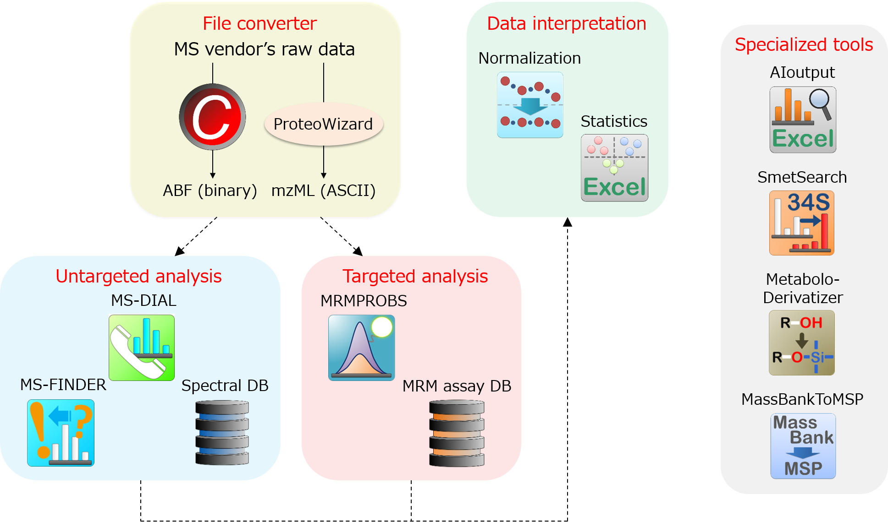

Others
Overview
Software tools and databases for metabolomics and lipidomics.
SmetSearch , AIoutput , MassBank to NIST MSP , LOWESS/Spline normalization , Statistics in Microsoft Excel , MetaboloDerivatizer .
SmetSearch , AIoutput , MassBank to NIST MSP , LOWESS/Spline normalization , Statistics in Microsoft Excel , MetaboloDerivatizer .

Software
SmetSearch
Objective
This project is to develop the formula 'identification' method by ultrahigh resolution MS instrument (we used FT-ICR).
The point of this program is to utilize two type of data; 1) fully labeled (in our case, by 34S) biological samples; and 2) non-labeled samples as the control.
The program generates formula candidates by means of non-labeled biological datum in combination with the strict mass tolerance (less than 2 mDa).
The 34S labeled datum is used to check the 'metabolite peak shift' derived from its labeled element with respect to the formula candidates.
The users can quickly perform the metabolite screenings from living organisms of interest.
The point of this program is to utilize two type of data; 1) fully labeled (in our case, by 34S) biological samples; and 2) non-labeled samples as the control.
The program generates formula candidates by means of non-labeled biological datum in combination with the strict mass tolerance (less than 2 mDa).
The 34S labeled datum is used to check the 'metabolite peak shift' derived from its labeled element with respect to the formula candidates.
The users can quickly perform the metabolite screenings from living organisms of interest.
Limitation:
1) The program needs two type 'direct infusion MS' data; 1) a 34S labeled biological dadum 2) a non-labeled sample datum.
2) The current SmetSearch program accepts the ASCII format file exported from Brucker DataAnalysis software.
Therefore, we produce the source code itself and please let us (hiroshi.tsugawa@riken.jp) know if you are using the different instrument (ex. Orbitrap or QTOF). We can help you as much as possible.
Please cite
Automation of chemical assignment for identifying molecular formula of S-containing metabolites by combining metabolomics and chemoinformatics with 34S labeling. Metabolomics [Springer link]
AIoutput
Objective
GC/MS is one of the most popular platforms for comprehensive analysis of metabolites in living organisms. The crucial process is to construct an organized two-dimensional data matrix containing compound names and their quantitative values. Because this process is the most complicated and knowledge intensive task in GC/MS-based metabolomics, it is essential to develop a tool for accurate, automatic data processing. We used the MetAlign (Lommen, 2009) data pre-processing tool. AIoutput can perform the peak identification, prediction, and data
integration from the result exported from MetAlign and user defined retention time and spectra library. AIoutput is a non-targeted and targeted analysis tool for GC/MS based metabolomics written in visual basic for application (VBA, excel macro) available in Microsoft Excel Windows versions 2007 and later.
Please cite
Practical non-targeted gas chromatography/mass spectrometry-based metabolomics platform for metabolic phenotype analysis. J. Biosci. Bioeng. 112, 292–298, 2011. [PubMed]
GC/MS based metabolomics: dvelopment of a data mining system for metabolite identification by using soft independent modeling of class analogy (SIMCA). BMC Bioinformatics 12: 131, 2011. [PubMed]
MassBank to NIST MSP
Objective
This program helps us to prepare NIST MSP format libraries applicable to a lot of programs (MS-DIAL, NIST MS Search, AMDIS) from MassBank records (also ReSpect).
Merging each MassBank text file into MSP is actually easy for the programers though, the end users (even me) are struggling to do this task.
If you want other functions to extract MassBank records, please let us know.
Merging each MassBank text file into MSP is actually easy for the programers though, the end users (even me) are struggling to do this task.
If you want other functions to extract MassBank records, please let us know.
LOWESS/Spline normalization
Objective
The normalization part of MS-DIAL and MRMPROBS programs was separated. The powerful mathematics especially for cohort studies is essential to normalize the drifts of MS-signal intensities. The basic concept of this method is to use the intensities over an analytical run of 'quality control (QC)' sample which is a mixture of all biological samples.
Briefly, measurement data of QC samples are smoothed by the LOWESS of the single-degree least-squares. And then, the coefficient values between QC samples are interpolated by the cubic spline. Lastly, the entire datasets is aligned to the spline result.
Statistics in Microsoft Excel
Objective
Principal component analysis (PCA), projection to latent structure regression (PLS-R), and projection to latent structure based discriminant analysis (PLS-DA) are the commonly-used multivariate analysis method in metabolomics study. Of course, there are many platforms for these analyses not only by the commercially available software such as SIMCA-P, but also by freely available software such as statistical language R, MetaboAnalyst. I also use them very much! However, I think that excel based platform should be also required for the approachability and the easily adjustment of Figures. In addition to multivariate analysis, I think that the easy-to-use platform for the graph making and the multiple comparison method is also required
although I also know these tasks are possible by some tools like VANTED. I would like to offer the platform such that many researchers can easily do the statistical analysis.
Please cite
Integrated strategy for unknown EI–MS identification using quality control calibration curve, multivariate analysis, EI–MS spectral database, and retention index prediction. Analytical Chemistry 89, 6766–6773, 2017. [ACS link]
MS-DIAL: data independent MS/MS deconvolution for comprehensive metabolome analysis. Nature Methods 12, 523–526, 2015. [PubMed]
MetaboloDerivatizer
Objective
Methoxyamine hydrochloride (MeOX) and N-Methyl-N-(trimethylsilyl)trifluoroacetamide (MSTFA) are commonly used for the derivatization of small molecules to decrease boiling points and increase stability for GC-MS analysis. Therefore, it is important to theoretically consider the TMS- and MeOX form of small molecules to predict their retention time- and fragmentation behaviours as well as to calculate their chemical properties. Therefore, the converter from the original structure form to the MeOX- and TMS derivative structure was developed. This converter accepts the SMILES code for structure description, and it generates the derivatized form as SMILES.
Please cite
Integrated strategy for unknown EI–MS identification using quality control calibration curve, multivariate analysis, EI–MS spectral database, and retention index prediction. Analytical Chemistry 89, 6766–6773, 2017. [ACS link]